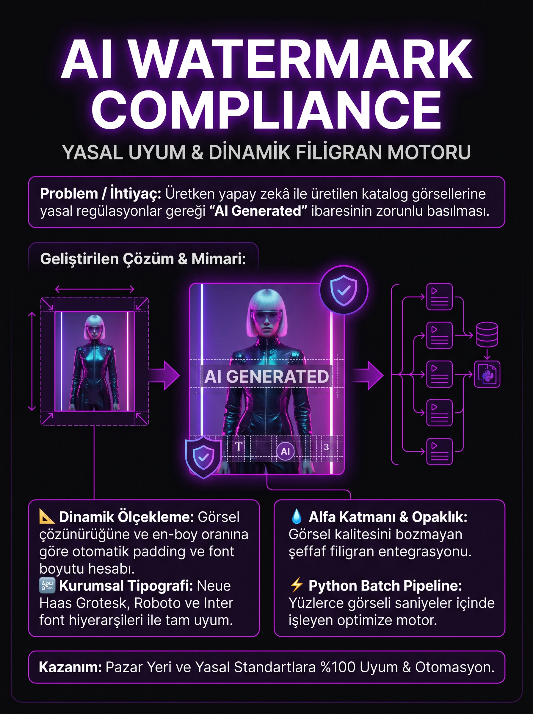

Yasal Uyum ve Dinamik Filigran Motoru
Üretken yapay zekâ ile oluşturulan kampanya ve ürün görsellerine yasal regülasyonlar gereğince "AI Generated" ibaresini ekleyen otomatik görsel işleme sistemi.
Farklı çözünürlükteki görseller için otomatik en-boy oranı, font boyutu ve padding hesaplama.
Neue Haas Grotesk, Roboto, Inter gibi endüstri standardı kurumsal font hiyerarşileri.
Görselin estetiğini bozmadan yasal okunabilirliği sağlayan şeffaf katman filigranlama.
Binlerce görseli saniyeler içinde işleyen optimize Python görsel işleme motoru.
Üretken yapay zekâ ile üretilen e-ticaret görsellerinin etiketlenmesi zorunluluğunu %100 karşılar.
Dinamik kontrast ve renk tonu eşitlemesi sayesinde ürün detaylarını kapatmaz.

Proje Tanıtım Panosu
AI Watermark Compliance projesinin Python görüntü işleme pipeline'ını ve web arayüzünü GitHub üzerinden inceleyebilirsiniz.
GITHUB'DA GÖRÜNTÜLE